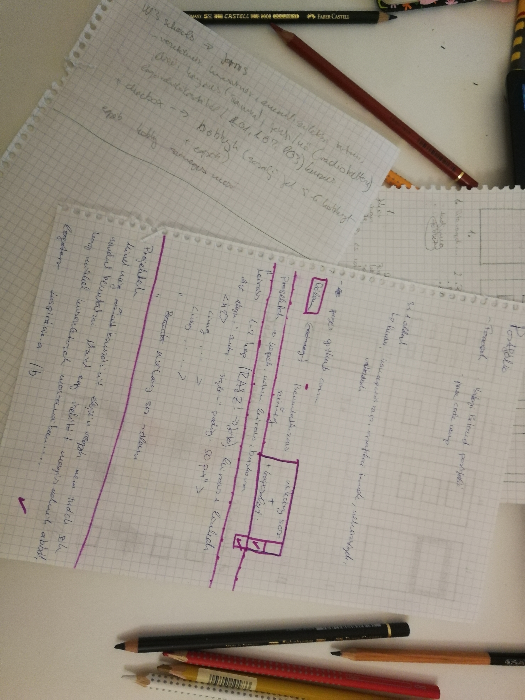
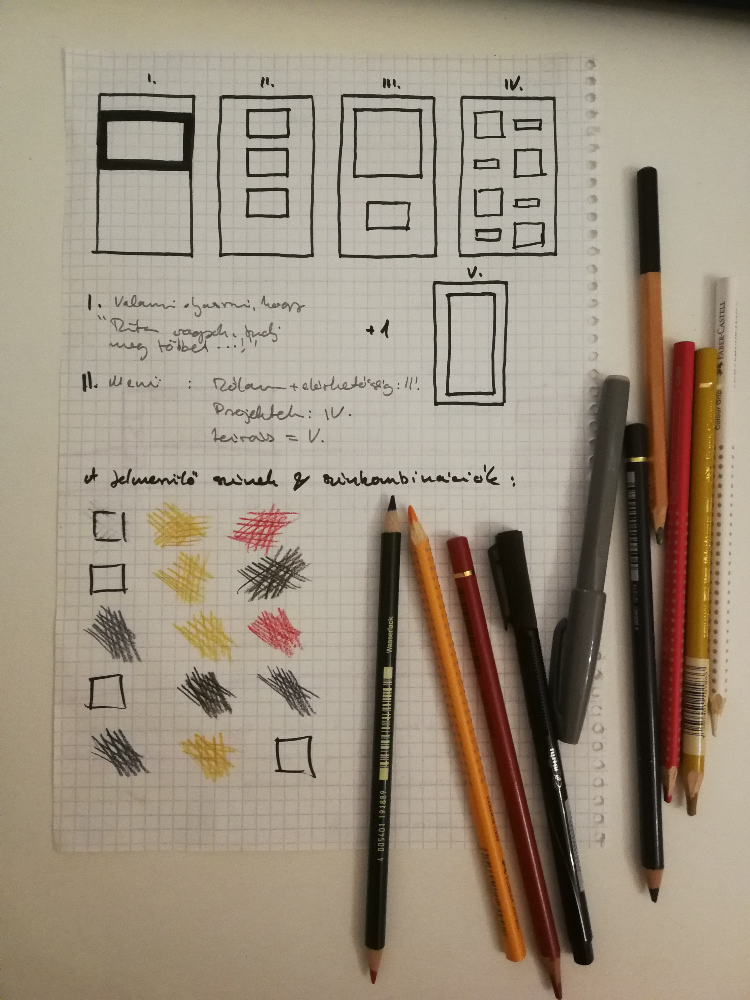
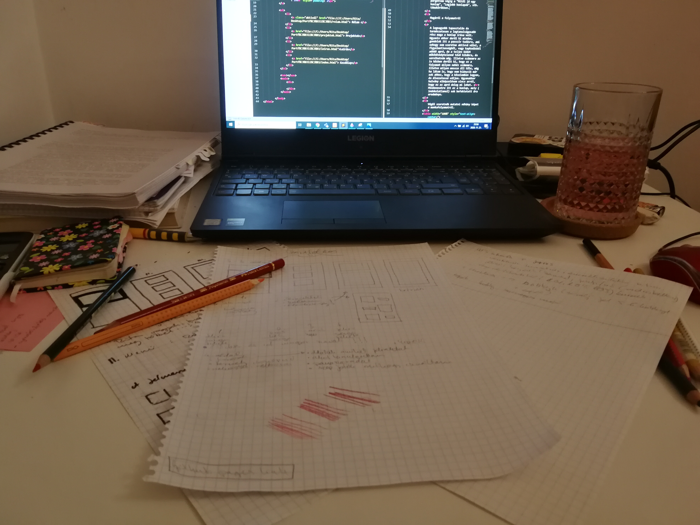

Leírás
A következőkben szeretném röviden megmutatni hogyan készült el ez a honlap, milyen nehézségeim, illetve segítségeim voltak a folyamat során.
Elsőnek szeretném leszögezni, hogy az informatika nem tartozik az erősségeim közé, hogy finoman fogalmazzak. Ebből kifolyólag igen sok nehézségem adódott a honlap megalkotása közben.
Eleinte egészen sok, kifejezetten jónak ígérkező ötletem volt a honlap tervezgetése közben. Az alap struktúrát le is rajzoltam, de ami számomra még ennél is fontosabb volt, azok a színek voltak. Ebből kifolyólag amikor realizáltam, hogy a megtervezett honlap tagolásához, és az egyes részek azon belül való elhelyezéséhez nincs elegendő tudásom, a színek voltak azok amikbe továbbra is kapaszkodhattam. Ezen kívül ami számomra a kezdetektől fogva szempont és cél volt, az az egyszerűség illetve a letisztultág, ugyanis életem során már számtalanszor zártam be egy oldalt kizárólag a kinézete, átláthatatlansága vagy kezelhetetlensége miatt. Ilyen téren nekem olyan szempontból "egyszerű" dolgom volt, hogy a tudásom nem volt elegendő egy kifejezetten komplex oldal létrehozására, innentől kezdve például egy útvesztőhöz hasonló honlapot ha szerettem volna,se tudtam volna létrehozni.
Számomra segítségül szolgáltak a következők
Ez az oldal pélául leírásokkal, feladatokkal és adott esetben apró kis segítségekkel tanít meg különböző kódok működésére, illetve használatára. Nekem is segített, de sajnos nem jutottam vele sokáig, meg is akadtam, és az időm is fogyott. Ami viszont még számomra nagy segítség volt azok a más emberek által létrehozott, de viszonylag egyszerűbbnek mondható oldalak. Ezek voltak azok amik több esetben is érthetővé tették számomra egy egy sor működését.
Ezen kívül sok cikket olvastam, illetve pörgettem végig a "Mitől jó egy honlap", "Legjobb honlapok", stb. témakörökben.
Magáról a folyamatról
A legnagyobb tapasztalás és természetesen a legtanulságosabb rész maga a honlap írása volt. Ugyanis ekkor derül ki minden, gondolok itt a passzív tudásra, ami sehogy sem szeretne aktívvá válni, a figyelmetlenségből, vagy kapkodásból adódó apró, de a teljes kódot működésképtelenné tévő hibákra, és sorolhatnám még. Illetve számomra az is közben derült ki, hogy ez a folyamat milyen nehéz számomra, illetve milyen messze áll tőle, még ha látom is, hogy nem hiányzik már sok ahhoz, hogy a közelemben legyen, és élvezetessé váljon. Ugyanakkor halvány elképzelésem sincs arról, hogy ez az apró dolog mi lehet.
Mindenesetre itt ez a honlap, mely (indokolatlanul) sok befektetett óra eredménye.
Végül szeretnék mutatni néhány képet a munkafolyamatról.
Vázlat |
Tervek |
Folyamatában |